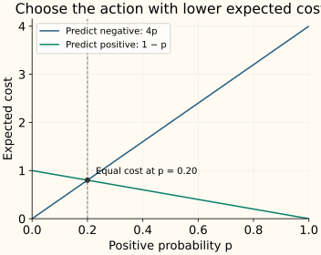

Threshold Moving
A classifier’s score and its final action are separate objects. Threshold moving changes the action rule while leaving the fitted score model unchanged. It can reduce missed positives, limit false alarms or meet another operating objective.
This chapter uses the same ten ranked cases as the evaluation chapter. We first select a threshold from validation outcomes. Later, we derive a cost-based cutoff for scores that can be interpreted as probabilities.
State the rule, including equality
Let $s(x)$ be the score for an observation $x$, with higher scores indicating stronger evidence for the positive class. Choose a threshold $t$ and write $\hat y$ for the predicted label:
We include a score exactly equal to the threshold. Other code may use a strict comparison; that difference matters when scores are tied. A threshold of 0.5 is a common default for probability predictions, but arbitrary decision scores have no universal cutoff at 0.5.
Lowering the threshold can only add alerts to this fixed score list. Recall cannot decrease, and the number of false positives cannot decrease. Precision need not change monotonically: the next group admitted might contain more positives or more negatives.
Choose against a stated validation objective
The validation scores, from highest to lowest, are [0.95, 0.90, 0.80, 0.70, 0.60, 0.55, 0.40, 0.30, 0.20, 0.10]. Their true labels are + − + − − + − − − −. These scores establish a ranking; we have not established that they are calibrated probabilities.
Assign cost 4 to a missed positive and cost 1 to a false alarm; correct decisions cost zero. At threshold 0.80, we detect two positives, miss one and raise one false alarm. Total cost is 4 × 1 + 1 × 1 = 5. At 0.55, we detect all three positives with three false alarms, costing 3.
A + is an actual positive; a − is an actual negative. Highlighted cases trigger an alert.
Changing the miss cost can change the preferred threshold. With miss cost 1, detecting only the highest-scoring case costs 2; accepting more alerts has no lower cost in this example. Lowering the threshold is a tradeoff, not an automatic improvement.
Search where the predictions actually change
For a finite validation set, predictions change only when the threshold crosses a distinct score. Evaluate those score cutoffs and one cutoff above the maximum, which predicts everything negative. Under our ≥ rule, a cutoff at the minimum score already includes the all-positive decision.
For cost 4, any threshold greater than 0.40 and at most 0.55 gives the same predictions here. The displayed 0.55 is a representative of that interval, not a uniquely precise parameter. Tied scores enter as a group because the model cannot rank them internally.
If the objective is a capacity limit or a minimum recall, first reject thresholds that violate the constraint, then compare the feasible choices. Sometimes no threshold satisfies all requirements. Randomly breaking ties or allowing partial review is a separate policy that needs its own evaluation.
Tune on validation predictions, then freeze the rule
Cross-validation can supply held-out predictions when data are limited. Scikit-learn’s TunedThresholdClassifierCV automates threshold tuning; its default objective is balanced accuracy, so set a scorer that matches your actual goal. With cv="prefit", the data used to choose the threshold must be separate from the data that trained the supplied classifier.
Changing the threshold does not change ROC AUC, AP or the underlying scores. It moves the operating decision along the existing curves. Refitting a model, changing class weights or recalibrating scores can change the score scale, so do not assume a threshold selected for one fitted system transfers unchanged to another.
When the score really is a probability
Now suppose $p$ estimates the probability that this case is positive in the intended population. Let $C_{\mathrm{FP}}$ be the cost of a false alarm and $C_{\mathrm{FN}}$ the cost of a miss, both positive, with zero cost for correct decisions.
Predicting positive is wrong only when the case is negative, with probability $1-p$. Predicting negative is wrong only when the case is positive, with probability $p$. Their expected costs are therefore
Choose positive when its expected cost is no larger. Rearranging $(1-p)C_{\mathrm{FP}}\le pC_{\mathrm{FN}}$ gives

This 0.20 rule assumes meaningful probabilities for the population being served. It is not a replacement for the empirical 0.55 cutoff on the earlier arbitrary scores. Check probability calibration, and account for a review-capacity constraint separately if one exists.
Python: select from a fixed validation score list
This small exhaustive search makes the candidate set and tie convention explicit. In a full model pipeline, score below would come from the fitted model on validation observations.
Run the validation cost search
import numpy as np
y = np.array([1, 0, 1, 0, 0, 1, 0, 0, 0, 0])
score = np.array([.95, .90, .80, .70, .60, .55, .40, .30, .20, .10])
thresholds = np.r_[np.inf, np.unique(score)[::-1]]
miss_cost, false_alarm_cost = 4, 1
costs = []
for threshold in thresholds:
predicted = score >= threshold
fn = np.sum((y == 1) & ~predicted)
fp = np.sum((y == 0) & predicted)
costs.append(miss_cost * fn + false_alarm_cost * fp)
# First minimum prefers the largest candidate threshold on a cost tie.
best = int(np.argmin(costs))
print(float(thresholds[best]), int(costs[best]))
0.55 3C++: sweep whole score groups once
After sorting, add equal-score observations together and update the miss and false-alarm counts. This evaluates every distinct prediction set in $O(n\log n)$ time for $n$ validation observations, including the no-alert case.
Compile the threshold search
#include <algorithm>
#include <cmath>
#include <iostream>
#include <limits>
#include <stdexcept>
#include <utility>
#include <vector>
struct Choice { double threshold, cost; };
Choice select_threshold(const std::vector<int>& y,
const std::vector<double>& score, double miss_cost) {
if (y.empty() || y.size()!=score.size() ||
!(miss_cost>0) || !std::isfinite(miss_cost))
throw std::invalid_argument("aligned data and positive finite cost required");
std::vector<std::pair<double,int>> rows;
std::size_t fn=0,fp=0;
for (std::size_t i=0;i<y.size();++i) {
if ((y[i]!=0 && y[i]!=1) || !std::isfinite(score[i]))
throw std::invalid_argument("binary labels and finite scores required");
rows.push_back({score[i],y[i]}); fn+=y[i];
}
std::sort(rows.begin(),rows.end(),[](const auto& a,const auto& b){
return a.first>b.first;
});
Choice best{std::numeric_limits<double>::infinity(),miss_cost*fn};
if (!std::isfinite(best.cost)) throw std::overflow_error("cost overflow");
for (std::size_t i=0;i<rows.size();) {
std::size_t j=i;
while (j<rows.size() && rows[j].first==rows[i].first) {
if (rows[j].second) --fn; else ++fp;
++j;
}
const double cost=miss_cost*fn+fp; // False-alarm cost is 1.
if (!std::isfinite(cost)) throw std::overflow_error("cost overflow");
if (cost<best.cost) best={rows[i].first,cost};
i=j;
}
return best;
}
int main() {
const auto best=select_threshold({1,0,1,0,0,1,0,0,0,0},
{.95,.90,.80,.70,.60,.55,.40,.30,.20,.10},4);
std::cout << best.threshold << " " << best.cost << "\n";
}
0.55 3The saved artifact should include the positive-class mapping, score function, threshold, comparison operator and the objective used to select it. That is enough to reproduce the decision rule when the fitted model is loaded again.
References and further reading
- Scikit-learn: tuning the decision threshold — score-versus-decision separation, scorer selection and held-out threshold tuning.
- Charles Elkan: The Foundations of Cost-Sensitive Learning — choosing actions by expected cost and deriving probability thresholds from a cost matrix.
- Scikit-learn: probability calibration — checking whether scores can be interpreted as event probabilities.